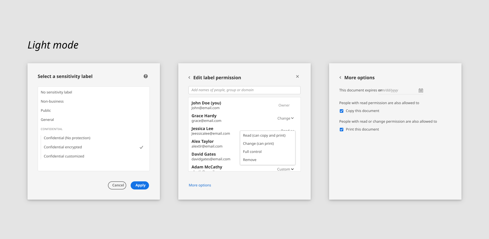
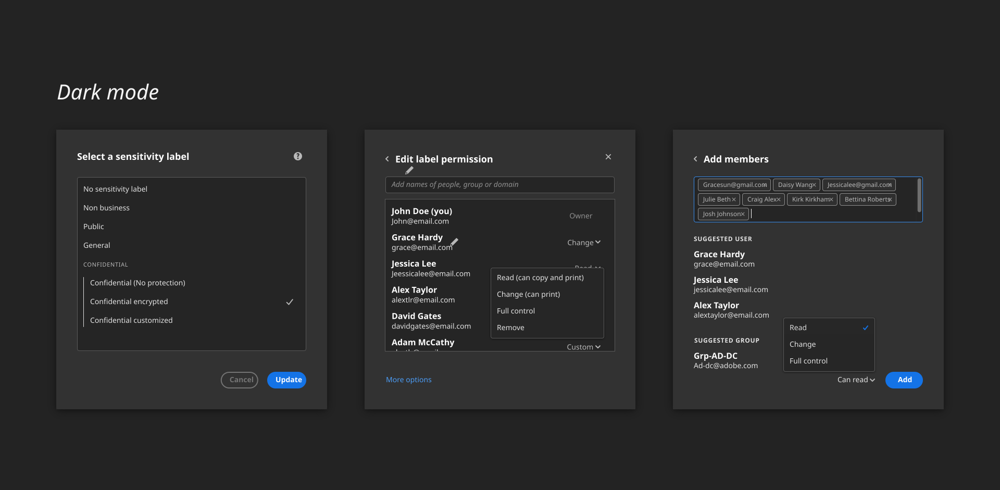

Lead design from ideation to impletation,across Acrobat desktop and Acrobat mobile. 200+ new enterprise users since private release with a potential of 60 Million+ seats for Acrobat.
OVERVIEW
Unlock Microsoft Purview Information Protection/MPIP in Adobe Acrobat
PDF is the world's most popular business document format. It's also the most common file types stored in SharePoint and One drive. And in many cases PDF files contains sensitive information. Partner with Microsoft, this integrated experience brings the same classification, labeling and protection from Microsoft office files to Acrobat. The experience was later nominated as “Security ISV of the year” by Microsoft in 2023.
More at Adobe blog🎨 Lead Designer
⏱️ Launched 2023
📄 Enterprise customers
My Role
Lead the design from ideation, iteration to implementation, worked with internal and external stakeholders, across Acrobat desktop to mobile, new and classic UX framework.

Experience problem & use case
As the most common file types stored in SharePoint and Onedrive, PDF is not covered in MPIP protection, leaves a broken workflow to enterprise users.
😵💫
“My company has MPIP protection for my word files, but I have to use another tool to make sure the encryptions are there with my PDFs.”
Business opportunity
MPIP has grown 60% y-o-y and commands 60 million+ seats.
🚧
With 80% of PDF open outside of Acrobat, this is a strategic move for Acrobat tap into Microsoft's knowledge workers.
What's MPIP
Microsoft Purview Information Protection (MPIP) is a Microsoft rights management solution that enables a rights-based access to assets including PDF documents.
Visit Microsoft Security for more details
Experience touchpoints - meet users where they are
After rounds of ideation with cross parnter teams, the entry point of this experience is nested under Protect PDF tool, where Acrobat usually go when they have any data/file security needs.


Respect established user behavior
As most of our enterprise users are already familiar with MPIP workflow within Microsoft ecosystem, within Acrobat, we landed on an experience that is familiar but refresh to Acrobat users.


Outline the experience across devices
To help engineering and product team understand how this experience would carry over to smaller screens, I provided an experience framework/vision early on to initiate this conversation. Design variations were considered across different use cases, including document's reader, commentor, owner and co-editor. We also went though multiple rounds of design iterations to make sure integration features are logically and visually seperated from the native experience. Process wise, this early experience framework had also been aligned with multiple team leaders across product, eng, partner for both android and IOS.

Scalable in different languages
As PDFs tend to be archived for an extended time frame, one use case we considered is that once a label was auto-applied by an admin or when the current software or a browser doesn't support this MPIP integration, how might we help the users to get timely support and know what to do next. And for Acrobat users, this scenario could come across in multiple languages. So one thing I worked on is to collaborated with the localization team and provided detailed design specs on how one screen should be localized in multiple languages. There were multiple back and forth involved as we need to make sure the idea could come across meaningfully in multiple languages and also make it visually consistent.


Unique challenge
Dance within the pace
How to design and lead for a good partnership experience? We started with a dated experience,[placeholder] that has been out for a while with enterprise customers, and also need to work with different engineer and product teams for difference platforms. After going through rounds of iterations. This experience was succesfully launched during Microsoft Ignite 2022 and continued to be improved until today.
Have a rationalized design POV
Designing for partnership experience often means double sized constraints: user expectations, feasibility, timeline from both products, hence it's important for the lead designer to have a solid POV based on our understanding of users and limitations. I really enjoyed the iterative process to collaborate with engineer, product, marketing and customer support from both internally and externally to build a clean experience for users.
Leveraging the resource within the design community
While designing for this project, our design team is also working on a complete revamp of the Acrobat experience, to make sure this project could be scalable in this moment of transition, I worked closely with multiple design teams to make sure all the touch points, components and workflow will be scalable in both classic and modern frameworks.
Raise the quality bar from E2E
We started this whole project with a quick sync up when the product team was still drafting out the roadmaps. As we dive deeper, I started to engage more stakeholders to this conversation to align on experience goal and key workflows. Later in the process, as we had 3 phases of releases, I managed to incorportate more feedbacks from our customers to the experience iterations.